I'm a product designer who defines problems with data and proves them all the way through with visuals.
I led the JobKorea redesign, then the JobPlanet redesign right after.
A real strength is being equally strong in logical problem-solving and aesthetic sense.
They always follow a problem through to a real solution, so they're a teammate you can hand anything to with total confidence.
Solved the cold-start problem for the 70% of visitors who weren't logged in through onboarding and AI recommendations that redefined the JobKorea homepage from an ad billboard into a personalization gateway.
Ran moderated usability tests myself and found that all 9 of 9 participants left the homepage without exploring on their own. That led to the insight that "generic personalization fails; only contextual personalization works," which shaped a search-bar-first, state-based module structure.
Planned and designed the Bluetooth pairing feature connecting the beauty device to its app. After launch, redesigned it around automatic detection and single-depth control to fix the confusion and CS issues users ran into.
Prototypes I built myself as short warm-up activities before and after JobPlanet usability test sessions, used to casually gather participants' opinions and insights ahead of the main session.
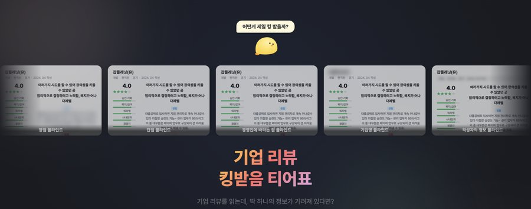
When review card info is limited, what frustrates users most? · n=87
Once explained, "the reviewer's info" jumped from #7 to #3, a value the label alone couldn't convey.
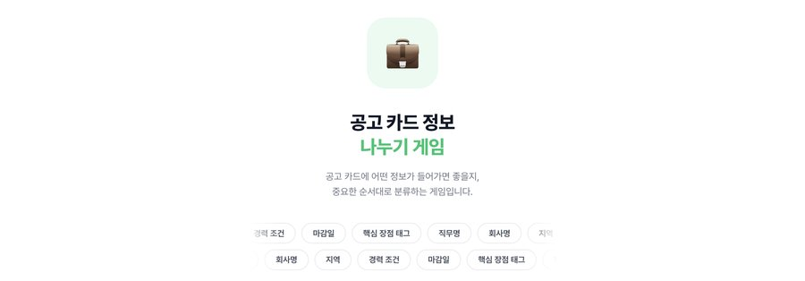
What information do users treat as essential in a job posting? · n=64
Images, logos, and education level turned out to be visual noise either way, and location mattered less the more eager someone was to switch jobs.
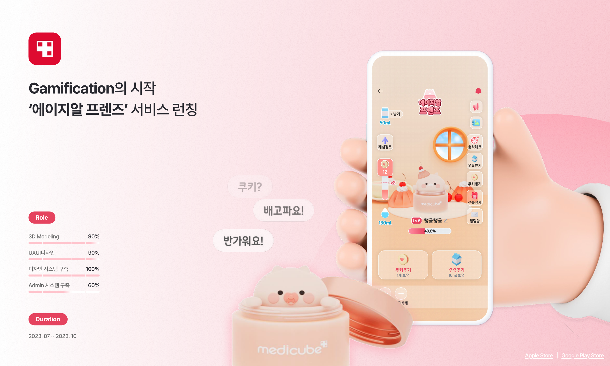
3D character-growth gamification · Jul–Oct 2023
A character-growth feature that turns device use into a game. Handled 3D modeling, UX/UI, and design-system development.
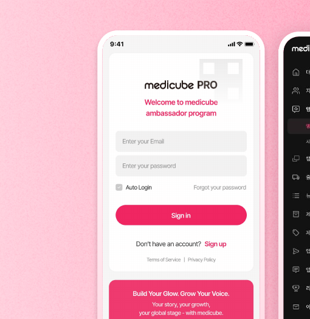
Influencer & performance management platform · Apr–Jul 2025
Replaced a third-party influencer management platform with an in-house build that saves roughly ₩300M a year and cuts turnaround from a year to 4 weeks.
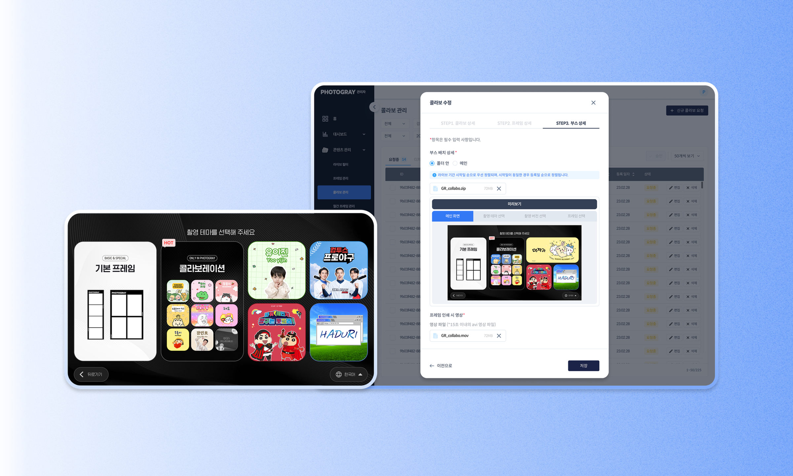
Photo-booth operations automation system · Jun–Jul 2025
Automated a manual operations process with an admin tool that cuts turnaround by 5+ days and reduces the workflow to 12 steps.
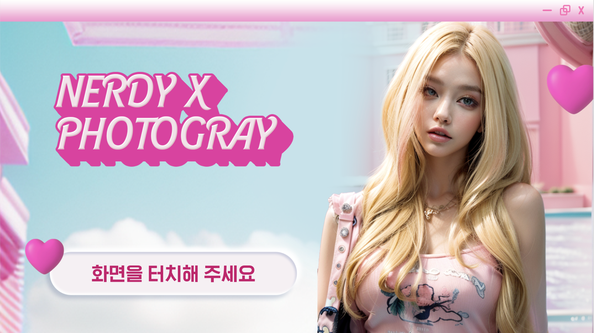
Brand collab AI filter event · 2023
Planned and designed a new AI filter event screen for a collaboration with apparel brand 'Nerdy.'
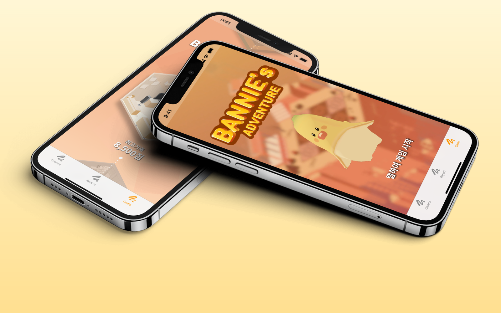
Phoneme discrimination training DTx · Game-based
A digital therapeutic that gamifies the "Speech Banana" concept for phoneme discrimination training.
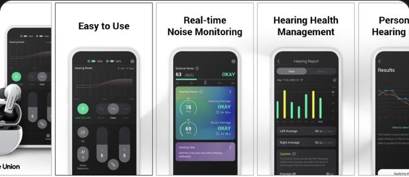
Smart hearing-aid companion app · Mar 2020–Mar 2021
A hearing-aid companion app with hearing tests, noise reports, and a custom adaptation program. After launch it ranked #14 in Health & Fitness on the U.S. App Store, with 24,000 cumulative device sales.
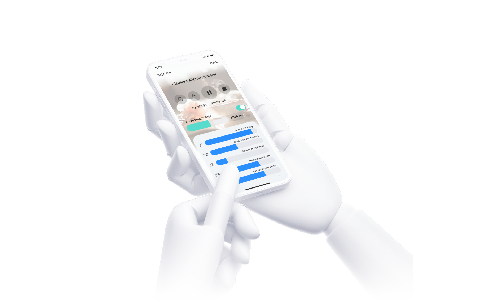
Notch therapy-based tinnitus relief app · Tinnitus relief DTx
Lets users identify their own tinnitus tone and relieve it through notch therapy. 77% of beta testers reported relief.
Remote audiology care service
A B2B/B2C web service where audiologists remotely adjust hearing aids alongside video consultations.
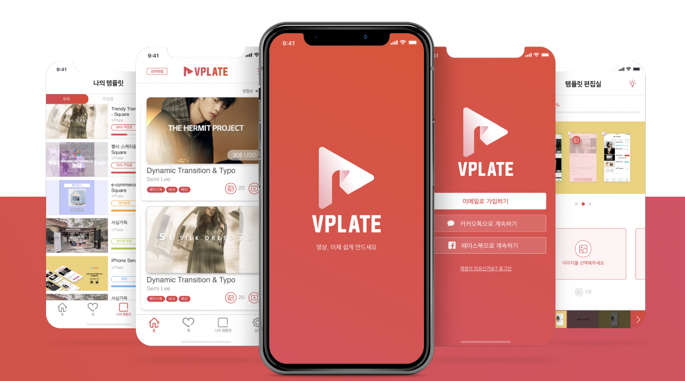
Video template app · 2020–2022
A template app that lets anyone create an ad video in 5 minutes.
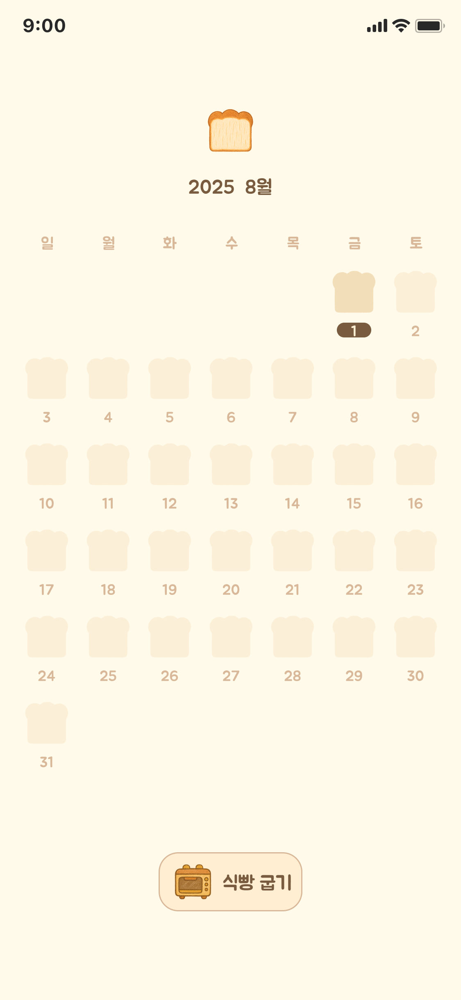
Daily journaling app · Personal side project
An app that records each day by toasting a slice of bread. Leave a short entry each day, and a slice on the calendar toasts to golden brown.
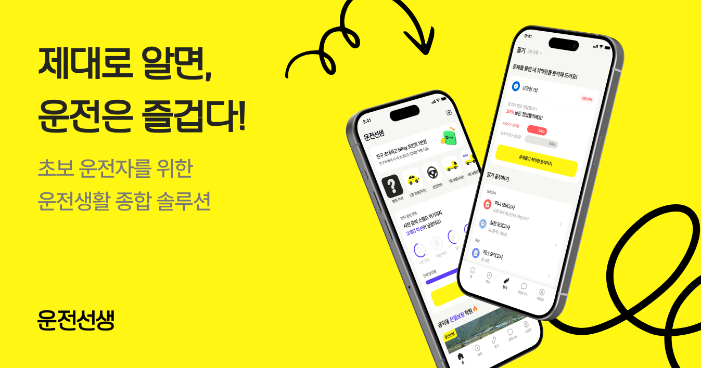
All-in-one solution for new drivers · drivingteacher.co.kr
From written and practical test prep to tips for new drivers, it offers content and a booking service for people just starting to drive.
Both filed in 2022; listed as an inventor on each.